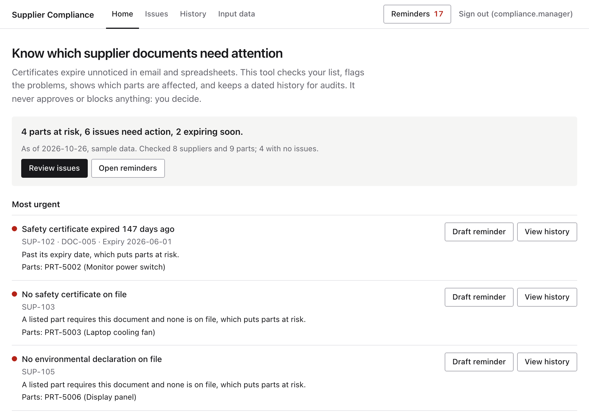
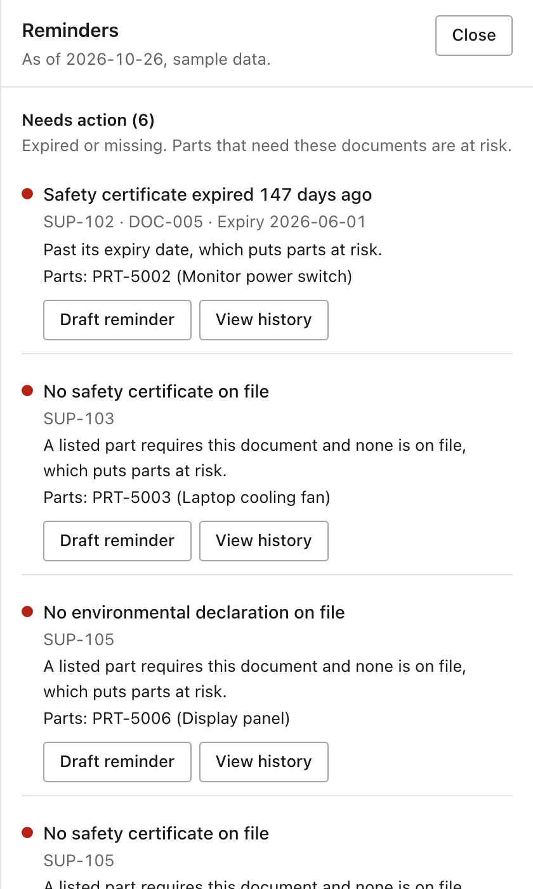
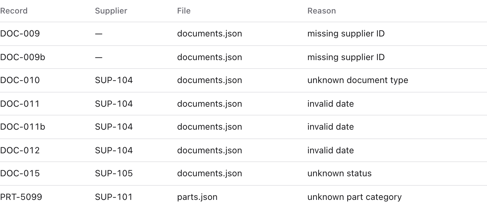
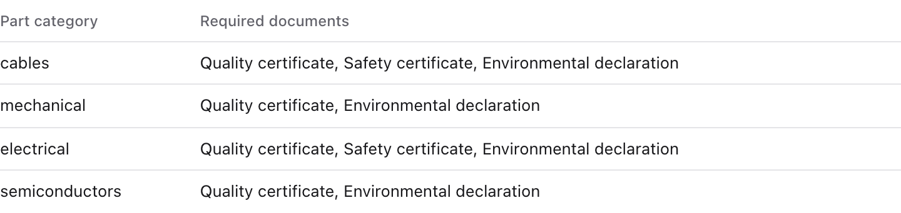
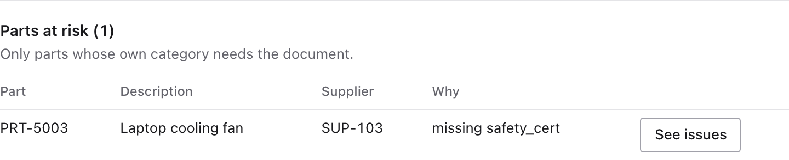
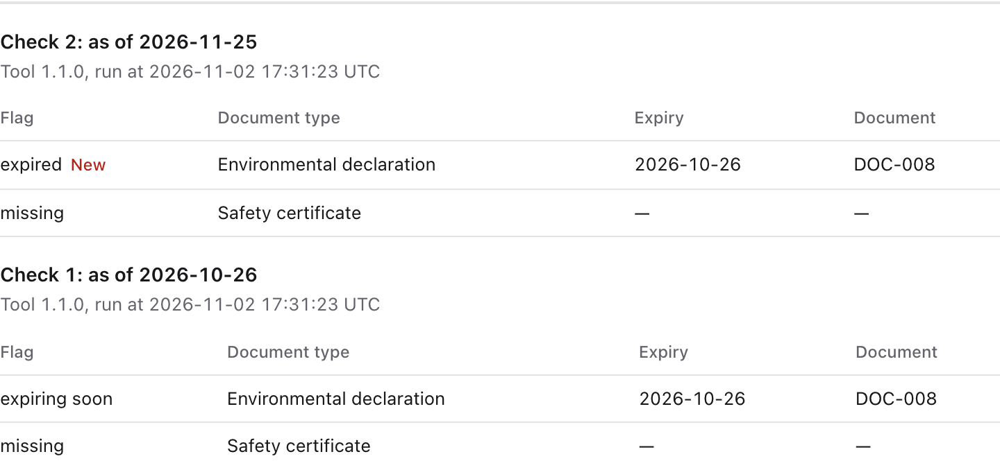

Week 3 team project, CoForge Associate FDE Training
Supplier Compliance Tracker
Know which parts are at risk from a supplier document, before an auditor asks.
Team 4: Dheepthi Reddy, Nikita Ravi, Vedanshu Daxesh Patel
Open with the promise in one sentence. The flow: the problem, what the product does, what it is worth, then each of us on our research and what we built, then a live demo, then the ask.
The problem
One missed date becomes a problem nobody can see until an auditor asks
A certificate lapses
Dozens of suppliers, each with documents to keep current
Nobody is alerted
The date sits in a spreadsheet cell or an email
Parts keep being ordered
Nothing links the document to the parts that need it
An auditor asks
The team reconstructs what it knew, and when
Customer check-in, 2026-10-28; LeanLinking; Racklify. A common pattern from practitioner sources and the customer, not a measured statistic.
Walk the chain left to right. The customer told us the document most often missing is the safety certificate. Be honest that this is a common pattern from practitioner sources plus the customer; we found no survey of how widespread it is.
The product
One place shows what to chase, and which parts it affects

Home: status and the most urgent issues

Reminders: ranked by urgency, with days counted
Real product screens on synthetic data, version 1.1.0, as of 2026-10-26. The tool flags and reports. The compliance manager decides.
These are real screens on synthetic data. Point to: 4 parts at risk, and safety certificate expired 147 days ago. Stress that the tool never approves or blocks; the manager decides. We will show it live shortly.
Business impact
What the business gets
Time0.06 sto check 1,000 suppliers and 4,900 records
Risk45 dayswarning before a document lapses
Focus5 → 4parts flagged: per-part logic removes the false alarm
Audit0.03 sto show a supplier's history across 520 saved checks
Cost to run0.46 MBfor 10 years of weekly checks, with no licence or database server
Trust183automated tests, run on every pull request
Measured on the product, 2026-11-02, on a MacBook in Python, not Docker. The 1,000-supplier set is generated test data; the others use the sample data. 45 days is the customer's setting (Q4). 183 tests include the new UI, not yet merged.
Each number comes from running the product. Time and audit are speed on a laptop with generated data. 5 to 4 is on the sample data: PRT-5004 is not held up, because its category does not need the missing document. Next: what this means for people's time.
Automation and time
Hours of checking by hand, or a fraction of a second
Checking by hand today
Your numbers: we have no baseline yet
a year, finding what needs attention
With the tracker
Measured: 1,000 suppliers, each weekly run
0.06 s
People still chase suppliers and make the decisions. Automation removes the searching, not the judgement.
Hours = suppliers × minutes × 52 weeks. Illustrative until measured in a pilot, and not a savings claim. Weekly cadence from the customer (Q7).
Ask Adam for his own numbers and change the dropdowns live. The left side is an estimate of today's effort. The right side is measured. Do not call the difference guaranteed savings: people still review the flags and chase suppliers. That is why we propose a pilot at the end.
Dheepthi Reddy: research
Knowing the users decided what the product flags
We learned
So the product
Quality certificates don't expire in the customer's records (Q2)
Allows an empty expiry for that type only
Buyers need parts, not just suppliers (Q5)
Works out risk per part
The manager wants pending / approved / missing (Q6)
Adds a pending flag in 1.1.0

In the product: every bad record is rejected with a reason
Customer answers Q2, Q5, Q6. Racklify; ISO 9001. Full sources: docs/client_brief.md.
Dheepthi: the one research change to highlight is quality certificates: they do not expire in the customer's records, so expiry can be empty for that type only. Certification bodies describe a three-year validity, so we logged an open question. Then move to how the rules work.
Dheepthi Reddy: how it works
Bad data stops at the door, and each rule is small and separate
Input files
Documents, parts, settings
Loaders
Reject bad records with a reason
Rules
Expired, expiring, missing, pending
Engine
Works out at-risk parts
Results
Saved, reported, shown
@register
class PendingDocumentRule(ComplianceRule):
name = "pending"
def evaluate(self, documents, parts, settings, today):
return [Flag(self.name, ...) for doc in documents
if doc.status == "pending"]
The 1.1.0 rule is one small class (abridged)

Requirements live in settings, so the manager can change them
Dheepthi: a bad record is broken and never saved; a flagged document is valid and saved, with a problem. A new rule is one class and the engine picks it up. Be accurate if asked: release 1.1.0 changed five source files in total, the new rule plus small changes. Handoff: now that the flags and at-risk parts are computed, Nikita shows where the research came from and where they live.
Nikita Ravi: research
Research before the first call told us what to ask
We assumed
We learned
So the product
A gap affects all of a supplier's parts
Only parts whose category needs it (Q5)
Works out risk per part
History kept, no period set
ISO sets no period; the customer needs 10 years (Q12)
Never prunes history
"What is expired today?"
The harder question is "what did you know on date X?" (our conclusion)
Saves every check with its date
One document per supplier and type
Renewals sit next to the old certificate
Judges only the current one

In the product: SUP-103 has two parts, and only PRT-5003 is at risk
Nikita: I researched real workflows before our first customer call, so we knew which assumptions to test. The research flagged renewals as a risk before we wrote code. It also got something wrong: I expected quality certificates to expire. Known limit: real safety and material declarations are often per part; we track per supplier, as scoped.
Step 7 saves the check and its flags together. If any row fails, nothing is saved.
Sample data, version 1.1.0: flags go from 9 to 18 across two checks, while documents stay at 19. Proved by test_failed_check_save_rolls_back.
Nikita: walk the diagram top to bottom, then stop on step 7. A second run does not duplicate documents, but history grows: flags go from 9 to 18 and at-risk parts from 4 to 8, and each flag keeps its own copy of the expiry date, so old results never change. Show the rollback test if asked. Handoff: the tool works on a laptop. Vedanshu shows how it runs anywhere, keeps history across releases, and rolls back safely.
Vedanshu Daxesh Patel: research
Audit rules made the history as important as the software
We learned
So the product
ISO 9001 §8.4 treats these as supplier records
Saves every check with its date
The customer needs 10 years (Q12)
Never prunes history
Software gets replaced
Keeps the database on a Docker volume
The image is replaceable. The history must outlive it.

In the product: what we knew on each date, with changes marked
ISO 9001:2015; ASQ; customer answer Q12. ISO requires retained records but sets no period; the 10 years comes from the customer.
Vedanshu: one customer answer, 10 years, drove three design choices: the database sits on a Docker volume, we never prune history, and every backup runs an integrity check. Be precise that ISO sets no retention period.
Vedanshu Daxesh Patel: how it works
The software changes, and the history stays
Release 1.0.0
7
flags on the sample
Release 1.1.0
9
the pending rule, same data
Roll back to 1.0.0
7
every check still in history
Container
Same image anywhere; data on a volume
Backup
Under 0.1 s, with an integrity check
CI
183 tests on every pull request
Next: live demo.
Vedanshu: you drive the demo. The script is docs/demo_walkthrough.md. The rollback proof is history, because 1.0.0's run only prints fresh flags. Reproduced with both versions on one database file; the Docker version is Vedanshu's rehearsal in the README. After the demo, go to the last slide.
Next step
The ask: a pilot with one team's real supplier list
What the pilot would measure
Weekly review time
before and after
Lapses caught early
caught ÷ all lapses
False alarms
no action needed ÷ all flags
Time to answer an auditor
minutes
What it needs first
Documents linked to parts, not only suppliers
Real reminders: email, with supplier contacts
Company sign-in and HTTPS
Close with the ask. We have shown what the product does on synthetic data; a pilot turns the illustrative time figure into a measured one. Be plain about what a real rollout needs first. Then open for questions.